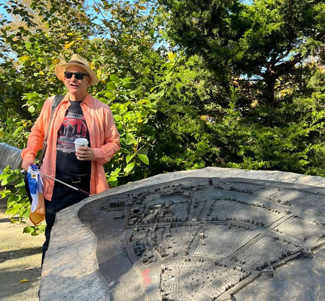
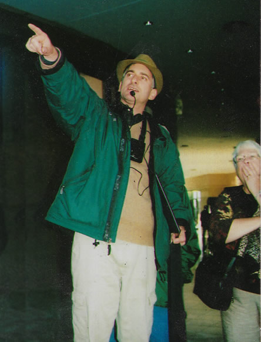
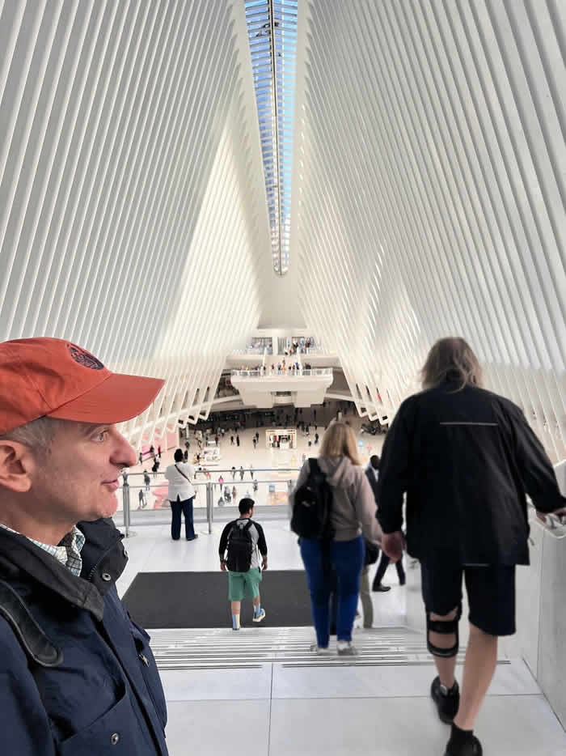
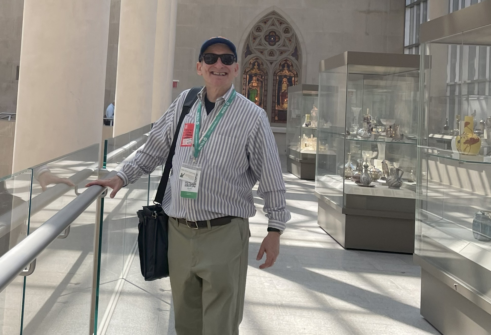
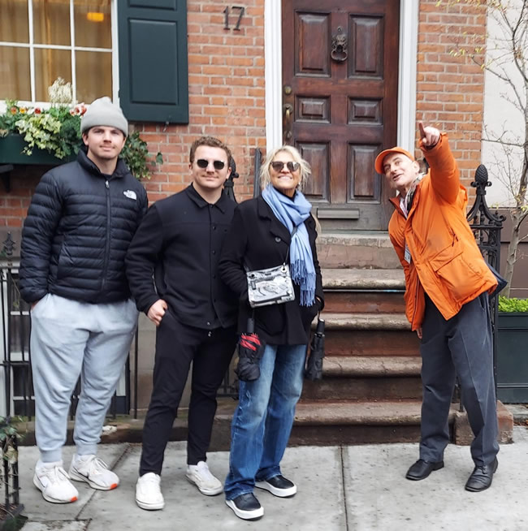
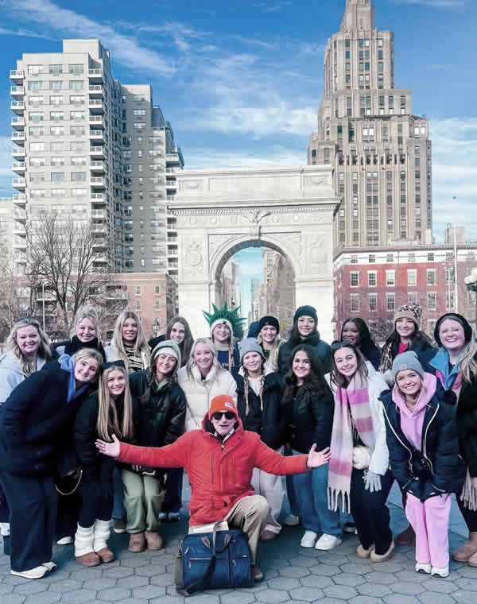
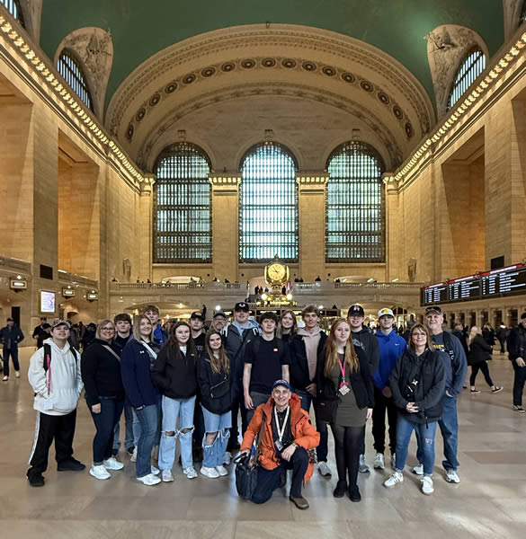
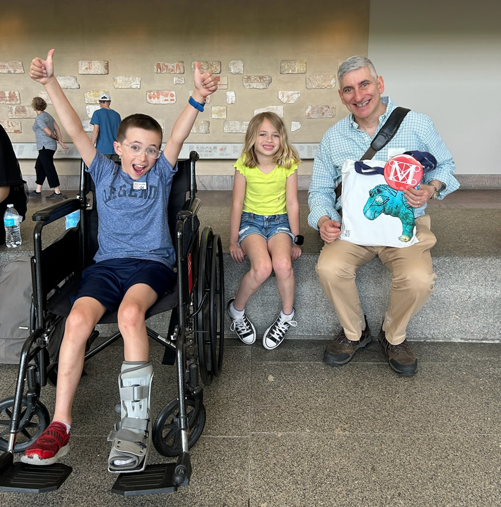
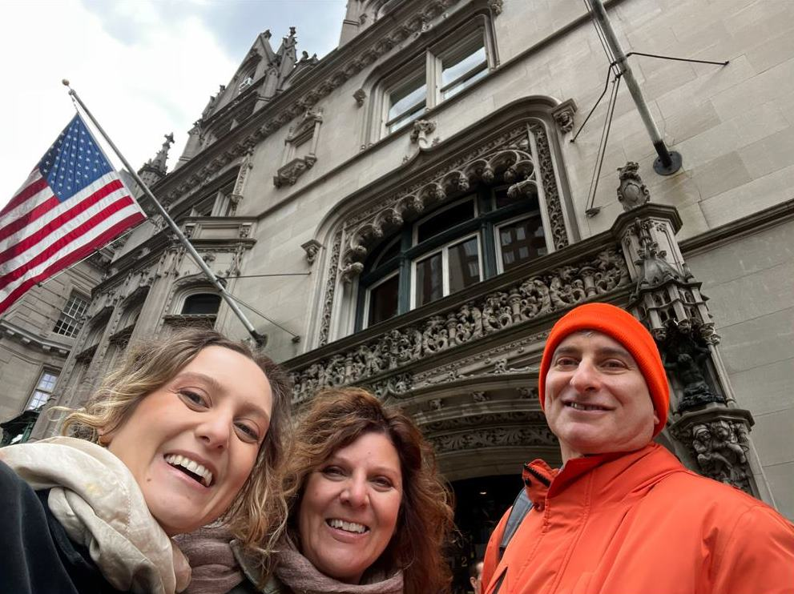
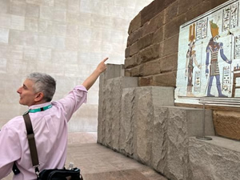

Testimonials
5.0 Average on Trip Advisor!
Over 200 reviews and a 5.0 average rating!
Guests praise Jared's ability to entertain all ages with deep knowledge and thoughtful accommodations.
About our top tours: The Insider Met Tour receives rave reviews as the best way to experience the Met Museum, with guests loving his insider access and recommendations to friends. The John Lennon in NYC Tour is praised as engaging, informative, and immersive—a standout experience for Lennon and Beatles fans exploring significant NYC locations.
Read all reviews on TripAdvisor →
Loved by families, schools & groups
Read real testimonials below praising Jared's deep knowledge, friendly vibe, and seamless logistics. Then plan your perfect NYC day!


Tour Operators

Jared leading a tour at Battery Park, using the detailed bronze relief map to explain Lower Manhattan's street grid, landmarks, and historic waterfront to his guests
— Eric Gordon, Beyond Times Square CEO and owner.
He was great to work with during the planning of our tour and created a day tailored especially for our group. We received lots of positive feedback from our tour participants and will definitely book with Jared on our next NYC tour.
As a group tour planner, I highly recommend Jared.
... I can't thank you enough for your services. [We] will certainly be in touch with your future groups. Thank you for taking such good care of my clients. I greatly appreciate it. Thank you.
Sincerely,
— Owner (of an American-based private and custom tour operator)
We will definitely contact you on our next visit to NYC."
— Family Owned Tour Operator serving the South.

This photo inspired my logo. It was taken across the street from the World Trade Center in 2010, while the 9/11 Memorial was still under construction. The woman's gasp in the background has always stayed with me—it captured the emotion of that moment in a way I'll never forget.
Testimonial from a client's client, a Tour Operator
Thanks again for your excellent remarks and introduction to our two historical destinations last week. Your "wrap up," which wove the whole day together, was perfect!"— Owner of a California Theater Tour, Tour Operator.
Testimonial from my Client's Client:
"Spoke to E_ today. She said you did a good job last night. [Thank you for working so hard on this job.]""Jared, I meant to tell you that I have been getting great reviews for your tours. Thank you."
— Client in September 2012.
From Jared: I have provided dozens of tours for her groups of international youth since February 2011.
— Andrea Janes, Boroughs of the Dead owner and operator
Individual and Small Group Private Tours
Private Tour New York City in the Gilded Age: A History of High Society
Our guide, Jared was excellent and very knowledgeable all the topics that came up. He was very attuned to all around him! He encouraged us to visit the Frick Museum. It was a true amazing highlight of our trip. Thanks Jared for an outstanding tour
— Kim KWe have been to NYC often but limited ourselves to the theater area and Central Park. Jared opened our eyes to a totally different part of the City — Chinatown and Little Italy. He ably explained what it was like and what it is now as he pointed out the architectural remnants on the buildings. He knew many shopkeepers and we were welcomed into a Chinese [herbal] pharmacy and an Italian cheese shop. As we walked across the Brooklyn Bridge, Jared explained how it was built and its importance to NYC at the time. We then discovered Brooklyn Heights, a quaint area with simultaneous views of the Statue of Liberty, the Empire State Building, the World One Trade Center and the bridges. A lot of walking but Jared kept us informed and entertained.
— Reviewed on ToursByLocals.comWit-and knowledge-packed 3 hours (Metropolitan Museum Guided Tour)
Exciting and witty in-depth look at collection highlights, many thanks to Jared. Definitely some of the most productive and interesting 3 hours I have spent in the recent past.
— Yury GJared, thanks so much for today. So informative and enlightening and your passion for the neighborhood [Harlem] is quite infectious!

Touring inside the Oculus in NYC - a hub of tourism, shopping, and transportation!
We had a great time with Jared. Like yesterday we just wouldn't have seen all this. What a fascinating place Harlem is. Jared was so informative and his passion for the district was quite infectious. Sylvia's was great.
Until next time... all the best
Hey Jared! We had so much fun as well! We really appreciate you and tour depth of knowledge. We both said there is no way we would have been able to see so much of the city without you as our guide. We would have spent too much time trying to figure out how to get to where we needed to be. Thanks again for a fantastic Saturday!
From Jared: I tailored the tour on the fly based on interests, weaving together stops like a single museum exhibit, Strawberry Fields, Central Park, the Ghostbusters apartment building, a Statue of Liberty viewpoint, the Charging Bull, a bagel break, the 9/11 Memorial, the Brooklyn Bridge, plus strolls through Chinatown and Little Italy.
Hi Jared, thanks for your message and the experience! The girls were so happy, as you felt too, and seemed really engaged.
I also really enjoyed it - I'm rediscovering New York as a mom with young kids, and I love that they're excited and engaged at a museum like the Met.
I think I wrote you this in our email, but I try to let [international museum] guides establish their own rapport and lead the way, part of what my kids enjoy is hearing about what inspires others, they really love that enthusiasm. I think you did a wonderful job with that, connecting with them and keeping it moving without being overwhelming.
I don't know how other groups are with kids, but I consider these kinds of experiences as valuable (if not more) as school.
Thank you for your dedication and energy, we all really appreciate it! 🙏🙏
— R., New York City
Touring the Met Museum!
Hello Jared, thank you for your message and after a couple of hectic travel days... The tour was an absolute success and it was not only quite informative but also a lot of fun! Thank you for your kindness and showing us around Manhattan! Even though I have been to the city several times already, I learned a lot from you and ... got a superb insight of the city's highlights!
....I know for next time whom to ask for a tour and if I have guests again, I'll gladly share your contact with them.
All the best and again, thank you for everything! 🙏🏻
Jared, We can't thank you enough for all you've done the past 2 days. I know how hard it is to keep teenagers focused for any length of time. I know we all learned as we enjoyed our time. You will forever be known as the best tour guide ever!
— K.T., Brighton High School TheatreJared was fabulous! - Wonderful info tailored to us - [Jared] provided great in-depth knowledge - Our 13 year old loved the interaction
— C.B."Jared - Thanks for a great tour of Alexander Hamilton's NYC - we enjoyed your insights and friendly way - truly a Raconteur Extraordinaire!"
— E.M. Á D.B, Portland, ME
A walking tour through Greenwich Village, NYC
"Jared, Thank You! We appreciate your knowledge & energy on the tour today. You really care about your job and it shows!"
— Craig, USA"So engaging and informative", "expertly done, "well paced", "knowledgeable", "great for the whole family"
— KB via Email"Thanks so much again for the fantastic tour. We absolutely loved it! We can't imagine a better welcome to the city. Above and beyond. City aside, your company for those hours was a genuine pleasure. The highlight of our stay. It was so nice to meet you. Thanks as well for dropping the map off at our hotel, we appreciate that. Thank you again Jared. We're hoping to come back some day, and would love to see you again."
— Paul from Quebec via WhatsApp
Jared with group in Washington Square Park
Jarrod was very knowledgeable about this museum and you could tell by his enthusiasm. He made this quick tour entertaining, educational and enjoyable.
— Docia_S
People loved the tour. I got great feedback. Thank so much. Rave reviews - they loved your insights.
— Ed H.
Dear Jared, I want to thank you from the bottom of my heart for the wonderful tour today in Harlem! Your tour was not only incredibly informative, but also deeply inspiring. You managed to bring us closer to the vibrant history and rich heritage of African American culture in Harlem in such an impressive way - with all its challenges, triumphs, and deep striving for freedom and expression.
Your passion and knowledge really touched me and I will not soon forget this experience.
Thank you so much for your enthusiasm and for giving us such an honest and impressive insight into this fascinating world. I wish you all the best and hope that many more people will have the opportunity to see Harlem through your eyes!
— Best regards, Dina
Thank YOU Jared!! The gals loved you!! You are truly an AWESOME TALENTED guide!! A gem!! Thank you!! Happy holidays to you as well! See you next year!
— Michele
August 2024
Great tour with Jared! He is very knowledgeable and tailored the tour to our interests. Highly recommend him!
— Tina_C
September 2024
Jared was amazing. He made the experience so wonderful! His knowledge, passion for his work and personality was outstanding!! Would recommend anyone visiting the MET to pay the small fee for the tour and ask for Jared if he's available!! Thank you from Shawn, Sofia, Alison, Harry!
— Shawn_S

Theatre lovers group tour and Jared in front of Stout's Executive Travel tour bus
Dear Jared,
Thank you so so much for your amazing tour today. We had a wonderful, inspiring, and very informative time and are leaving New York and the MET grateful and with full hearts. Visiting the MET had been a dream for so long, and we were so lucky to get you as our guide sharing your passion and insights. We hope to be returning to the MET in the near future...
Thank you very much, we appreciated it.
P.S. We also got the book you recommended
— T. and J.
Don't hesitate to book Jared!
Jared was an absolutely fabulous guide, and very engaging with our teenagers (who didn't have the museum top of their list for NYC!). We covered many different areas in the Met, and Jared flexed the tour to suit what we were interested in. It really enhanced our visit to hear the stories behind the artifacts. Thank you Jared!
— Gemma,
Hampshire, UK
September 2024
Jared was an outstanding guide. He was very knowledgeable, he told funny stories that kept the tour interesting. I would highly recommend to visitors to take the tour if it is their first time at the [Metropolitan Museum of Art].
— Veronica W.
October 2024
Absolutely fabulous - Absolutely fantastic. 11am tour with Jared who was awesome. So very knowledgeable in so many areas and his knowledge of art is amazing. Jared went above beyond and felt very lucky to have got him.
— Miss P.

Jared leading a group of students through Grand Central Terminal
September 2024
Jared is a Major League All Star Guide in the City that never sleeps. We (my lady and I) spent a perfect 16 hours over four days with Jared viewing Central Park, the High Line, the Metropolitan Museum of Art and the south side from Battery Park to the Nine Eleven Memorial, along the way we learned a greater appreciation for all things New York. Thanks for the memories. Live long and prosper.
— Michael M.
August 2024
Our tour guide was a former employee of the Met. He had a deep knowledge of everything. He was able to show us a lot in just 3 hours. You could never see as much with the understanding of it without such a great guided tour... Don't try to save a few bucks by not going on a tour of the Met. Worth every penny if you want to appreciate the art and not just look at it.
— Mike_B
Thank you so much for the wonderful tour! We have not stopped talking about how much fun we had and everything we learned.
— Hagedorn K
April 2024
Jared was amazing. He used to work at the Met and knows a lot of secrets. Only wish it could've been longer because there are so many beautiful works of art, it's hard to cover it all in 2 hours. But this was the perfect way to hit all of the highlights!
— BH from Virginia
— MW from Wisconsin (Toured with me five times with both family and friends)

Metropolitan Museum of Art Tour with kids!
For my John Lennon's NYC tour
Jared! Thank you so much for your time, your passion...! A very memorable time indeed! I'll treasure it always...as wheels go round & round! ...Two Day Tour
Hello Jared, Thank you for the two amazing days with you. We have seen so many interesting things in NY and learned about the history of the city! The visit to the Bronx and the Italian market was also special....Anyway thanks for the great time. . . Let us know if you will come to the Netherlands again! I will recommend you to friends and family if they go to NY.Central Park Walking Tour
Morning Jared,We both throughly enjoyed your tour of Central Park on Monday. The time fly by but you ensured we saw everything we wanted too see. Tour guide, photographer you are the whole package... Thanks Again.
— K. from Australia, 2019
Testimonial from Girl Scouts of Charleston Carolina area
"Jared, all the girls loved you as well as their parents...we were so blessed to have you as our tour guide!I love New York and will definitely come back and when I do, we will look you up! Thanks again."
"An amazing glimpse of NY's Lower East Side..."
We booked a tour with Jared Goldstein... It was a fantastic glimpse into the lives of the Jewish, Italian and Chinese immigrants living in the Lower East Side of Manhattan.We walked and talked for almost three hours and stopped in many restaurants and stores for mini-visits and refreshments along the way. Jared pointed out lots of interesting places and shared many "inside" stories; he also shared additional suggestions if we wanted to extend the tour on our own.
I would recommend this tour to anyone interested in the history of NYC whether they are native New Yorkers, or not!
— August 2, 2011
Subject: TOUR GUIDE EXTRORDINAIRE!!
Hey JaredJust a quick email to say a BIG thank you for giving me a fantastic tour of New York last week. Am now back in the UK and boy I need to be back in the US. ...
I had an amazing day with you ...!!!
... Take care and speak with you soon.
— E. F., London
August 2, 2011
Review of my World Trade Center Tour
Jared was patient, as two of us arrived at the tour a few minutes late. He handled an awkward intrusion in a funny, professional manner at the start of the tour. The level of information he shared was top notch and full of detail, but also sympathetic and caring.Overall, a very nice young man doing an emotional job in a sacred place.
— "AhisMom", Danville, California
Visited June 2012

Enjoying Times Square!
Testimonial for Williamsburg and Brooklyn Heights tour: "fun, fabulous and factual day."
Thank you Jarad* for a fun, fabulous and factual day. Looking forward to next time!From Jared: Private Walking Tour for a couple. We went to Williamsburg and Brooklyn Heights from Chinatown, 9/12/2010. - They referred their friends to me the following year.* These are actual quotes, so sometimes my name is misspelled.
Testimonial about my John Lennon NYC Tour
"We loved your tour! You were fantastic and made our trip so special. It was so fun walking around in NYC with you. ... Jared. Do you have ANY idea how good you are? Fabulous, actually....Your brains ...blew both me and Robert completely away..."— K.S. from Massachusetts

Private Guided tour of New York City - historic buildings and American flags!
—Nataliya B, Edmonton, Alberta, Canada
Reviewed November 20, 2012
* These are actual quotes, but my name is really Jared
Regarding a private tour to Greenwich Village:
"... Ellen and I very much enjoyed our time with you in NYC. Your knowledge and on the fly tour decisions made it a fun and educational day for us. Your help made my first NYC experience a great one. Hopefully we will see you again on our next visit."— Peter and Ellen from Lake Tahoe.
— Judy Richheimer, Tour Guide/Journalist
—Jill

Touring Egyptian art on the Metropolitan Museum of Art Insider Tour
— Victor
— Visitor from Portugal
— Marc from Essen, Germany
— Sarah
Thanks, Jared! From your repeat customers from Chicago and Nebraska.
— Visitor from Midwest, USA
Educator and School Tours

Evaluation sheet from 12 year old on Metropolitan Museum of Art group tour (2024)
Testimonial from a Dance Mom and Director of a Dance Center
"Thank you again for a great NYC experience for our dancers and parents."A Teacher and Curriculum Developer's Testimonial about Brooklyn Bridge tour for teachers
Hello Jared,Thank you for a wonderful tour of the Brooklyn Bridge, we all learned a great deal about the bridge's importance not only to New York's history, but the nation's as well.
I know the group was very appreciative of your flexibility
...
— Teacher in charge of Florida school district's curriculum development
Jared leading a group of students through Grand Central Terminal
Jared, We can't thank you enough for all you've done the past 2 days. I know how hard it is to keep teenagers focused for any length of time. I know we all learned as we enjoyed our time. You will forever be known as the best tour guide ever!
— K.T., Brighton High School TheatreJared with group in Washington Square Park
Testimonial from Girl Scouts of Charleston Carolina area
"Jared, all the girls loved you as well as their parents...we were so blessed to have you as our tour guide!I love New York and will definitely come back and when I do, we will look you up! Thanks again."
Hi Jared, thanks for your message and the experience! The girls were so happy, as you felt too, and seemed really engaged.
I also really enjoyed it - I'm rediscovering New York as a mom with young kids, and I love that they're excited and engaged at a museum like the Met.
I think I wrote you this in our email, but I try to let [international museum] guides establish their own rapport and lead the way, part of what my kids enjoy is hearing about what inspires others, they really love that enthusiasm. I think you did a wonderful job with that, connecting with them and keeping it moving without being overwhelming.
I don't know how other groups are with kids, but I consider these kinds of experiences as valuable (if not more) as school.
Thank you for your dedication and energy, we all really appreciate it! 🙏🙏
— R., New York CityMetropolitan Museum of Art Tour with kids!
Jared was fabulous! - Wonderful info tailored to us - [Jared] provided great in-depth knowledge - Our 13 year old loved the interaction
— C.B."So engaging and informative", "expertly done, "well paced", "knowledgeable", "great for the whole family"
— KB via EmailPress Features
"His eyes flash as he waxes rhapsodic about the city's past. Goldstein... comes well equipped to give these walking jaunts."
Read more"The aptly named "Jared the tour guide" reminded me that tour guides don't always have to be expensive."
Read more